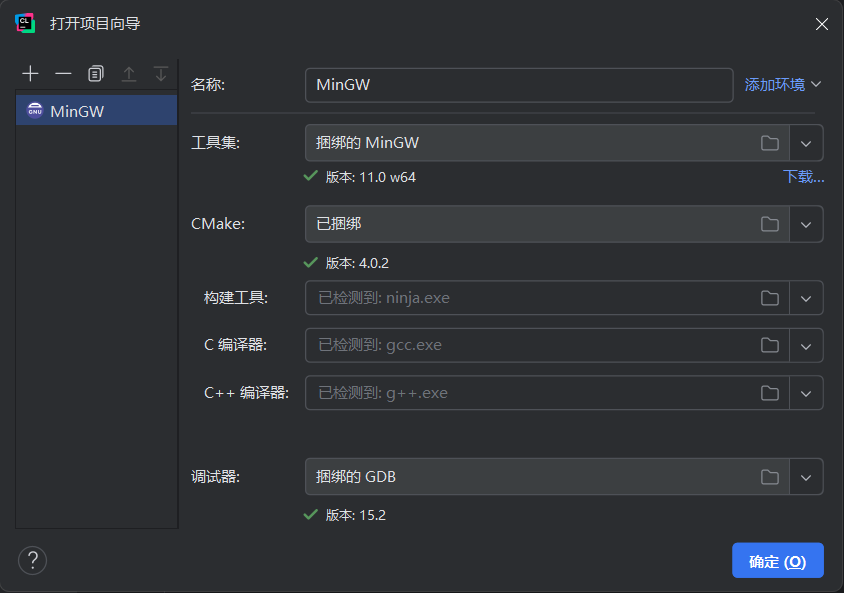

IDE 安装教程¶
强烈建议各位去 Github 上进行学生认证，会有很多福利和优惠，比如 JetBrains 全家桶的专业版，免费申请一些域名等。
CLion 安装¶
JetBrains 是一家总部位于荷兰的软件开发公司，成立于 2000 年，其最为人所熟知的产品是 Java 编程语言开发撰写时所用的集成开发环境：IntelliJ IDEA
2025 年 5 月 8 日晚，JetBrains 发布公告，宣布 CLion（2025.1.1 之后的版本） 现在针对非商业用途免费开放，只需注册账号就可以了。学长们之前还用过盗版
选择对应系统和架构的安装包下载安装即可。
在 Ubuntu 16.04 or later 上有无更简单的安装？
有的兄弟，有的，这么简单的安装方式只需要一行命令就行 sudo snap install clion --classic
不过 snap 的包管理不是好文明，不建议用
Example¶
以 Windows 11 上的安装为例：
从https://download.jetbrains.com/cpp/CLion-2025.2.1.exe上下载好之后打开，遇到下图所示界面时可以根据喜好选择，也可以跟下图保持一致：

然后点两次下一步就可以安装了（大概 5 分钟左右）。
安装后配置¶
如果你之前使用过 VSCode 或者 JetBrains 公司别的软件（如 IntelliJ IDEA、PyCharm、WebStorm、Rider 等）， 可以直接导入此前的设置，也可 Skip Import。登录后选择 Non-commercial use 可领取为期一年的许可证（放心，到期了也可以再续）
想要中文怎么办？
学习编程不建议使用中文，英文看习惯了就好了
New Project¶
新建一个示例项目：
CLion 相比于其他 IDE 的好处是工具链全部都捆绑安装好了：

点击右上角的运行即可运行示例代码：

CLion 这么好，那有没有什么坏处呢？
有的有的，CLion 的缺点有如下几点：
-
几乎所有 JetBrains 的 IDE 都会运行着一个 jvm，因此内存占用较大
-
CLion 默认使用 CMake 进行构建，而且是基于整个项目进行构建，想要单文件运行可能需要手动更改 CMakeLists 文件，不过 CLion 也提供了单文件运行的选项，在对应的 main.c 文件的 main 函数中右键即可看到。
但是瑕不掩瑜，CLion 仍然是配置最简单，最容易上手的 C/C++ IDE
更多设置或插件建议自己摸索，这里就不一一细说了。